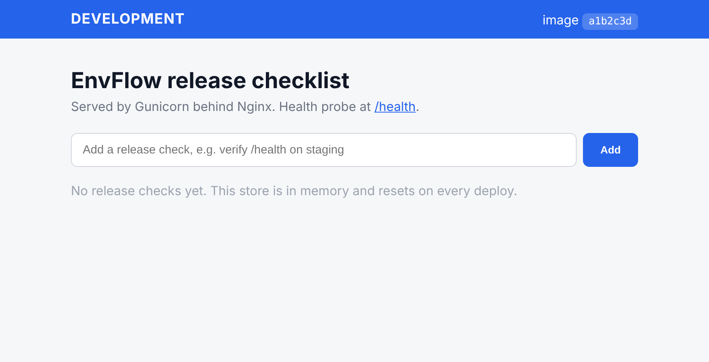
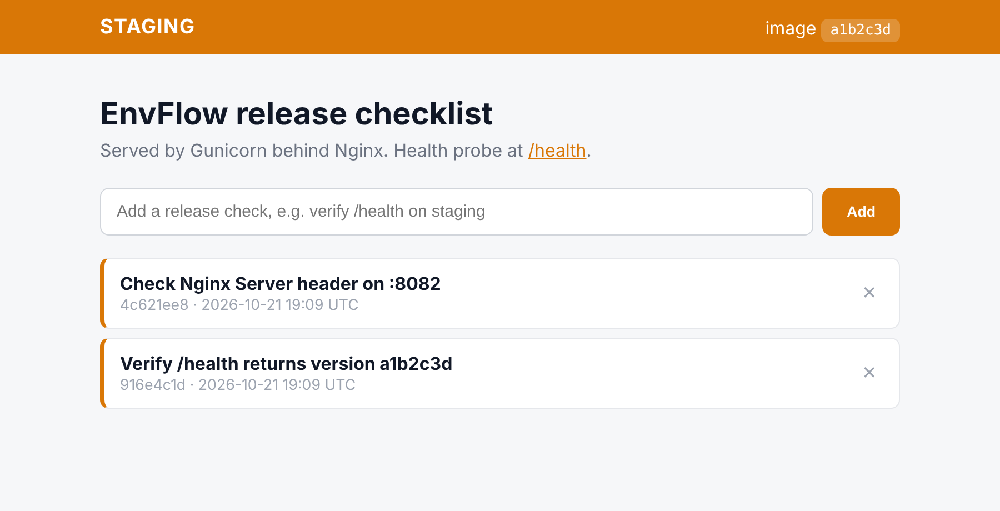
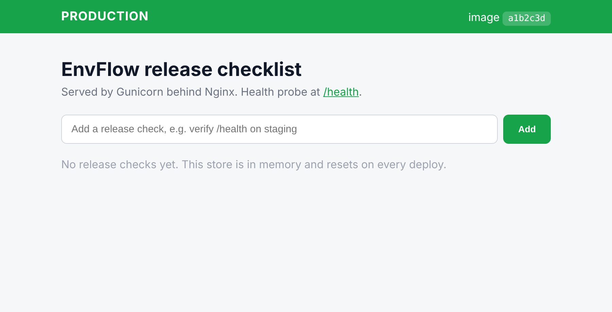
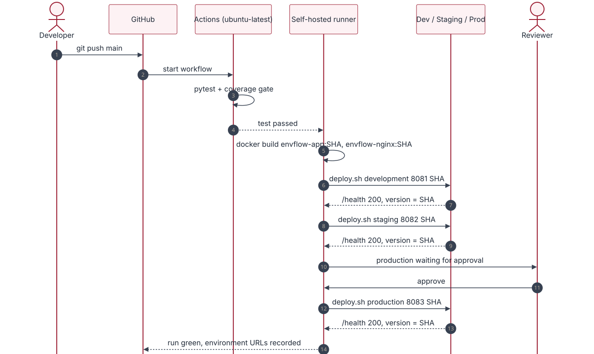

| Om Anand Jha | 16010123214 |
| Om Dwivedi | 16010123213 |
| Paaras Kokate | 16010123224 |
github.com/__GH_OWNER__/envflow-cicd-pipeline
Manual deployments are slow and repetitive, and they differ from one environment to the next. A change that has not been tested can reach users. EnvFlow solves this with a pipeline in GitHub Actions. On each push, the pipeline tests a small Flask web app, packages it as Docker images tagged with the Git commit SHA, and promotes those same images through Development, Staging and Production. Each environment is a separate Docker Compose stack, with Nginx as the reverse proxy in front of Gunicorn. After every deployment a smoke test sends a request through Nginx and checks the HTTP status, the health status, the deployed version and the server header. Production is protected by a GitHub Environment that has a required reviewer, so a person must approve each release. When a test fails, the pipeline stops before anything is deployed. When a new container fails its health check, the pipeline restores the last good image in that environment and stops the promotion.
Keywords: CI/CD, GitHub Actions, GitHub Environments, Docker, Nginx, immutable artifacts, smoke testing, release approval.
Teams release small changes often. When people deploy by hand (log in to a server, pull the code, install packages, restart the process), every release is slower and less reliable than it should be. Small differences between the developer's machine and the server make an app that works locally fail after release.
Continuous Integration and Continuous Deployment (CI/CD) automate these steps. When the app and its runtime are packaged into one Docker image, the same artifact can move through each test stage before it reaches users.
The project is about the pipeline, not the app. EnvFlow is a deliberately small Flask app: a release checklist with an in-memory store, an environment banner and a JSON /health endpoint. The three environments run as Docker Compose stacks on one Mac through a self-hosted GitHub Actions runner and are published on ports 8081, 8082 and 8083. In a real company these would be separate servers. The pipeline logic stays the same, and only the deploy target changes.
Continuous Integration builds and tests the code on every push or pull request, so regressions show up within minutes [1]. Continuous Delivery and Deployment take the validated build, package it and move it through further environments with a repeatable, version-controlled process [7].
If each environment builds its own copy, the base images or dependencies can change between builds, and staging no longer proves anything about production. EnvFlow builds envflow-app:<sha> and envflow-nginx:<sha> once in the build job. Every deploy job then runs those exact tags. Only runtime variables such as APP_ENV and the host port differ between environments [3].
| Environment | Purpose | Trigger | Checks |
|---|---|---|---|
| Development | Fast feedback | Push to main, dev or feature/** | Unit tests, build, smoke test on :8081 |
| Staging | Production-like validation | Push to main after Development passes | Same image, smoke test on :8082 |
| Production | Serves end users | After Staging passes and a reviewer approves | Required reviewer, smoke test on :8083, last good image kept |
A Python WSGI server should not take traffic directly. Nginx accepts the connection, serves /static/* from disk, adds security headers and forwards dynamic requests to Gunicorn on the internal Docker network [4].
GitHub Environments add rules on top of a workflow: secrets per environment, branch restrictions and required reviewers [2]. A job that names the production environment pauses until an approved reviewer clicks Approve. If a job is only called "production" and has no environment rule, nothing protects it. The rule is what makes the gate real.
| Technology | Role in EnvFlow |
|---|---|
| Git and GitHub | Version control, branches, pull requests, source hosting |
| GitHub Actions | Runs the five-job workflow defined in .github/workflows/cicd-pipeline.yml |
| GitHub Environments | development, staging and production, with scoped APP_SECRET_KEY and a required reviewer on production |
| Self-hosted runner (macOS) | Runs the build and deploy jobs on the machine that hosts the three environments |
| Docker (OrbStack) and Compose | Builds the images, then runs one isolated stack per environment |
| Nginx 1.26 Alpine | Reverse proxy, static files and security headers |
| Python 3.12, Flask 3.0.3, Gunicorn 22 | Web app and production WSGI server |
| pytest 8 and pytest-cov 5 | Eight test cases with an 85% coverage gate |
| Bash and curl | deploy.sh and smoke_test.sh for deployment and verification |
Only the test job runs on GitHub's hosted Ubuntu runner. The build and deploy jobs run on a self-hosted runner on the Mac, so the containers they start are real and can be opened in a browser during the demonstration. With a hosted runner, the containers would stop when the job ends.

The jobs are chained with needs. Staging cannot run until Development has passed, and Production cannot run until Staging has passed and a reviewer has approved. Pull requests run only test and build, so a PR is checked but never deployed.

| Event | Scope | Result |
|---|---|---|
push | dev, feature/** | test → build → Development |
push | main | test → build → Development → Staging → approval → Production |
pull_request | into main | test → build only |
workflow_dispatch | Actions tab or gh workflow run | Manual run. The break_health input is used to demonstrate a failed health check |
envflow-cicd-pipeline/ ├── app.py Flask app and /health ├── templates/index.html environment aware dashboard ├── static/style.css served by Nginx ├── tests/test_app.py 8 pytest cases ├── requirements.txt, pytest.ini pinned deps, 85% coverage gate ├── Dockerfile app image ├── nginx/Dockerfile, nginx.conf proxy image ├── docker-compose.yml one stack, parameterised per environment ├── .github/workflows/cicd-pipeline.yml ├── scripts/ │ ├── deploy.sh deploy, verify, record or restore │ ├── smoke_test.sh post-deploy verification │ ├── setup_github.sh repo, environments, reviewer, secrets │ └── demo_helper.sh demonstration shortcuts └── docs/ diagrams, screenshots, this report
GET /health returns status, environment, version, uptime and timestamp as JSON.
Development · :8081
Staging · :8082
Production · :8083APP_ENV differs.| Method | Route | Behaviour |
|---|---|---|
| GET | / | Renders the dashboard with the environment banner, the SHA and the task list |
| POST | /add | Validates the text, adds the task with an 8-character id and a UTC time, then redirects with 302 to / |
| POST | /delete/<id> | Removes the matching task. An unknown id does nothing. Redirects with 302 |
| GET | /health | Returns 200 with healthy, or 503 with unhealthy when BREAK_HEALTH=1 |

| Stage | Job / runner | What happens |
|---|---|---|
| 1 Trigger | workflow | push, pull_request or workflow_dispatch starts the run. concurrency stops two runs on the same branch from deploying at the same time |
| 2 Checkout | every job | actions/checkout@v4 |
| 3 Validate | test · ubuntu-latest | Python 3.12 with a pip cache, installs the requirements, then pytest with --cov-fail-under=85 |
| 4 Build | build · self-hosted | Builds envflow-app:<sha7> and envflow-nginx:<sha7> and exports the tag as a job output |
| 5 Deploy | deploy-* · self-hosted | scripts/deploy.sh <env> <port> <sha7> for each environment in order |
| 6 Verify | inside deploy.sh | smoke_test.sh checks the new container through Nginx |
build: needs: test runs-on: self-hosted outputs: { tag: ${{ steps.tag.outputs.tag }} } steps: - uses: actions/checkout@v4 - id: tag run: echo "tag=${GITHUB_SHA:0:7}" >> "$GITHUB_OUTPUT" - run: docker build --build-arg GIT_SHA=${{ steps.tag.outputs.tag }} -t envflow-app:${{ steps.tag.outputs.tag }} . - run: docker build -f nginx/Dockerfile -t envflow-nginx:${{ steps.tag.outputs.tag }} . deploy-production: needs: [build, deploy-staging] if: github.ref == 'refs/heads/main' runs-on: self-hosted environment: { name: production, url: http://localhost:8083 } # required reviewer pauses here steps: - uses: actions/checkout@v4 - run: ./scripts/deploy.sh production 8083 ${{ needs.build.outputs.tag }} env: { APP_SECRET_KEY: ${{ secrets.APP_SECRET_KEY }} }
| ID | Test | Expected result |
|---|---|---|
| TC-01 | test_index_page_renders | 200, page shows the environment and the SHA |
| TC-02 | test_health_endpoint_json | 200, status healthy, environment and version correct |
| TC-03 | test_add_valid_task | 302, task added at the top of the list |
| TC-04 | test_add_empty_task_rejected | 302, store unchanged |
| TC-05 | test_add_oversized_task_rejected | Store unchanged |
| TC-06 | test_delete_existing_task | 302, task removed |
| TC-07 | test_delete_invalid_id_noop | 302, no error, store unchanged |
| TC-08 | test_health_reports_unhealthy_when_broken | 503, status unhealthy |
| Dockerfile instruction | Effect |
|---|---|
FROM python:3.12-slim | Small Debian base image |
ARG GIT_SHA → ENV APP_VERSION | Puts the commit SHA into the image, and /health reports it |
RUN pip install Flask gunicorn | Runtime dependencies only. Test tools stay out of the image |
COPY app.py templates static | Copies only what the app needs at runtime |
USER envflow | Runs as a non-root user |
CMD gunicorn -w 2 -b 0.0.0.0:5000 | Production WSGI server |
The Nginx image is nginx:1.26-alpine with nginx.conf and the static folder copied in, so the proxy is versioned with the same SHA. A single docker-compose.yml describes the stack. The compose project name is envflow-${APP_ENV}, so each environment gets its own containers and its own network. Inside each network the app is always reachable as app:5000.

smoke_test.sh <url> <sha> polls /health for up to HEALTHCHECK_TIMEOUT seconds. It then checks four things: HTTP 200, "status": "healthy", "version" equal to the expected SHA, and a Server: nginx header on /. The version check proves that the container serving traffic is the one this run deployed, not an older one.

On success, the SHA is written to ~/.envflow/<env>.last_good. On failure, the script prints the app logs, starts the last good SHA again and verifies it, and then exits with code 1. The job turns red and the next environments are skipped. This is a simple recovery step for one host. It is not a blue-green deployment, so the environment is unavailable for a few seconds while the containers restart.
| Name | Scope | Value | Purpose |
|---|---|---|---|
APP_SECRET_KEY | Environment secret (all 3) | random, per environment | Flask signing key, never in the repo |
HEALTHCHECK_TIMEOUT | Repository variable | 30 | Max wait for /health |
APP_ENV | Set by deploy.sh | development / staging / production | Banner and /health |
HOST_PORT | Set by deploy.sh | 8081 / 8082 / 8083 | Published Nginx port |
IMAGE_TAG | build job output | commit SHA (7) | Image used by every environment |
| Required reviewer | production environment | repo owner | Manual approval gate |
| Branch policy | production environment | main | Only main may deploy to production |
docker compose on macOS../scripts/setup_github.sh. It uses the GitHub CLI to create the repository, the three environments, the production reviewer and branch rule, and the secrets../run.sh.git push -u origin main. The first pipeline run starts.
| # | Step | Evidence shown |
|---|---|---|
| 1 | Repository, Dockerfile, nginx.conf | Files on GitHub |
| 2 | Workflow triggers and needs chain | cicd-pipeline.yml and the production environment rules |
| 3 | Push a banner change to main | A new run appears in Actions |
| 4 | Job logs | 8 tests passed, image tag, Health check PASSED for Development and Staging |
| 5 | Approve production, open the 3 URLs | Three banners with the same SHA, Server: nginx in curl -I |
| 6a | demo_helper.sh break-test and push | The test job is red and all deploy jobs are skipped |
| 6b | demo_helper.sh break-health | deploy-dev is red, the last good SHA is restored, Staging and Production are not touched |
| Criterion | How EnvFlow meets it |
|---|---|
| Runs automatically or manually | push, pull_request and workflow_dispatch triggers |
| Build and tests pass | 8 of 8 tests pass at 97% coverage, and the gate fails the run below 85% |
| Correct image in each environment | One SHA tag is built and the same SHA appears in all three /health responses |
| Nginx serves the response | The smoke test requires a Server: nginx header |
| Health check confirms availability | Health check PASSED in each deploy log |
| Production is controlled and traceable | A required reviewer, a main-only branch rule, the GitHub deployment history and the SHA tags |
All three environments share one host and the local Docker engine, and no registry is used. Recovery restarts the containers, so there is a short downtime. The in-memory store resets on each deploy, which is acceptable for a stateless demo app.
EnvFlow replaces manual deployment with one versioned workflow. Each commit is tested, built once into SHA-tagged images and promoted through three isolated environments. Each step is verified through Nginx. Production gets the strongest control: it waits for a person to approve. Failures stop the pipeline early, and an environment never stays on a version that failed its checks. The project shows the core DevOps practices of automation, immutable artifacts, environment separation, verification and governed releases.